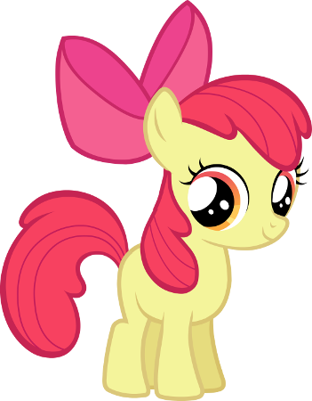
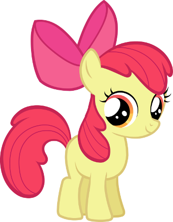

Apple Jack

Origine et Personalité
AppleJack est un poney terrestre femelle et l'un des personnages principaux de My Little Pony : Les amies, c'est magique.
Elle vit et travaille comme agricultrice dans un verger de pomme à Sweet Apple Acres .
Elle vit avec sa grand-mère Granny Smith , son frère aîné Big McIntosh et sa petite sœur Apple Bloom.
Elle est la représentation de l'élément d'harmonie de l'Honnêteté et sait faire preuve d'un grand altruisme envers les autres poneys.

L'histoire de sa cutie mark
C'est la marque de Applejack qui symbolise son attachement à la vie à la Ferme de la Douce Pomme. Elle explique aux chercheuses de talents comment elle avait quitté Poneyville pour se rendre à Jumanhattan chez son oncle et tante Orange.
Elle pensait qu'en vivant comme eux en ville, elle aurait sa marque de beauté mais au final, après avoir contemplé un magnifique arc-en-ciel depuis la fenêtre de chez oncle et tante Orange, elle se rendit compte que sa place n'était pas au milieu de tout ces poneys supers sophistiqués et élégants, mais à Poneyville. Elle retourna donc chez elle, à la Ferme de la Douce Pomme et reçu sa marque alors qu'elle courait vers son chez-soi.
Galeries d'images
 
